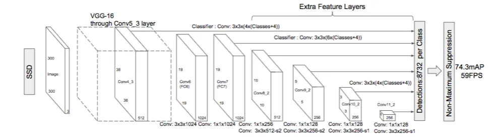

Marie-Sklodowska-Curie Early Stage Researcher
Research title: Assurance case structures for machine learning in the decision making of autonomous vehicles
Abstract
Advancement in the field of autonomous vehicles, especially in the areas like perception, sensor technology, sensor fusion, planning and decision making, etc., have greatly improved the overall autonomous capability of Autonomous Vehicles. This has further allowed for the transition from hands-on driver assistance, with limited cruise control automation, to hands-off fully automated driving. With several prototypes of fully automated driving models already driving on roads and streets, the challenge of guaranteed performance and safety under all driving circumstances must be addressed appropriately.
Today, hands-off fully automated driving has been made possible because of high level automation that can be achieved by Machine learning techniques. Many of the state of art machine learning techniques have outperformed humans in various pattern recognition benchmarks.However, mere performance of these Machine learning techniques on such benchmarks cannot be considered as an argument to support the safety assurance in safety critical domains like Autonomous Driving. Therefore, a system based on ML techniques can only be allowed to function in safety critical domains, if they can be argued to be acceptable as safe.
The scope of this report is to review safety concerns of Autonomous vehicles which typically arise from the software pipeline. The recent prototypes of Autonomous vehicles have their software pipelines heavily dependent on various machine learning techniques. Safety concerns arise due to the non-deterministic nature and the inherent uncertainties of these Machine Learning techniques. In this report, we will review the software pipelines available in the literature for autonomous vehicles focusing on various machine learning techniques, the uncertainties which are introduced in the software pipelines, the failure modes which exist because of machine learning techniques used in the software pipeline of an autonomous vehicle and the available techniques to handle or detect such failure modes. s
Implemented Bayesian Convolutional Neural Network (CNN), for uncertainty estimation for computer vision tasks
Architecture
Publication : Runtime Decision Making Under Uncertainty in Autonomous Vehicles (using Bayesian Neural Networks Variational Inference). (SafeAI 2021).
Abstract
Autonomous vehicles (AV) have the potential of not only increasing the safety, comfort and fuel efficiency in a vehicle but also utilising the road bandwidth more efficiently. This, however, will require us to build an AV control software, capable of coping with multiple sources of uncertainty that are either preexisting or introduced as a result of processing. Such uncertainty can come from many sources like a local or a distant source, for example, the uncertainty about the actual observation of the sensors of the AV or the uncertainty in the environment scenario communicated by peer vehicles respectively. For AV to function safely, this uncertainty needs to be taken into account during the decision making process. In this paper, we provide a generalised method for making safe decisions by estimating and integrating the Model and the Data uncertainties.
Implemented Single Shot Detector (SSD) for pedestrian detection in computer vision tasks
Architecture
SSD’s architecture builds on the venerable VGG-16 architecture, but discards the fully connected layers. The reason VGG-16 was used as the base network is because of its strong performance in high quality image classification tasks and its popularity for problems where transfer learning helps in improving results. Instead of the original VGG fully connected layers, a set of auxiliary convolutional layers (from conv6 onwards) were added, thus enabling to extract features at multiple scales and progressively decrease the size of the input to each subsequent layer.
Implemented Conversational agent using CNN for intent classification in medical domain
Architecture
-
Publication: Robust Intent Classification using Bayesian LSTM for Clini- cal Conversational Agents (CAs) (EAI - 2021)
Abstract
onversational Agents (CAs) are software programs that replicate human conversations using machine learning (ML) and natural language processing (NLP). CAs are currently being utilised for diverse clinical applications such as symptom checking, health monitoring, medical triage and diagnosis. Intent classification (IC) is an essential task of understanding user utterance in CAs which makes use of modern deep learning (DL) methods. Because of the inherent model uncertainty associated with those methods, accuracy alone cannot be relied upon in clinical applications where certain errors may compromise patient safety. In this work, we employ Bayesian Long Short-Term Memory Networks (LSTMs) to calculate model uncertainty for IC, with a specific emphasis on symptom checker CAs. This method provides a certainty measure with IC prediction that can be utilised in assuring safe response from CAs. We evaluated our method on in-distribution (ID) and out-of-distribution (OOD) data and found mean uncer-tainty to be much higher for OOD data. These findings suggest that our method is robust to OOD utterances and can detect non-understanding errors in CAs.